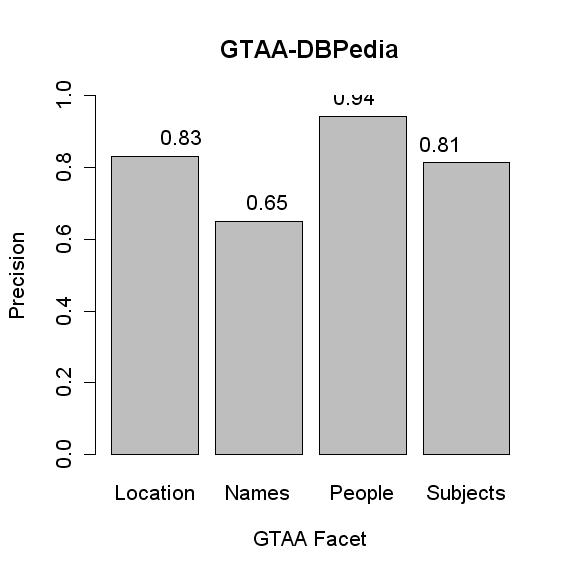
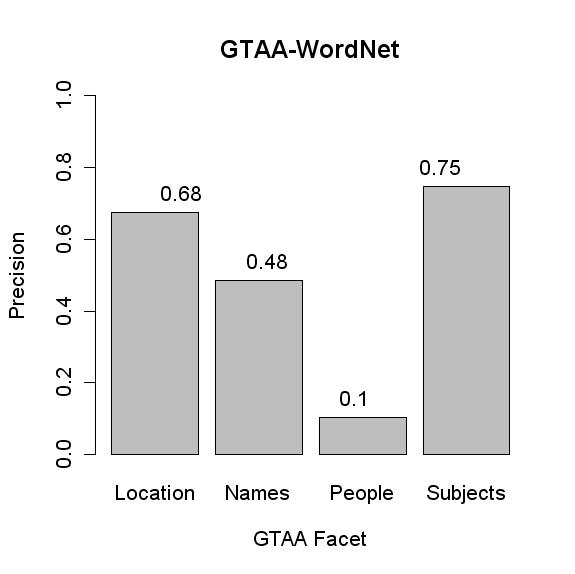
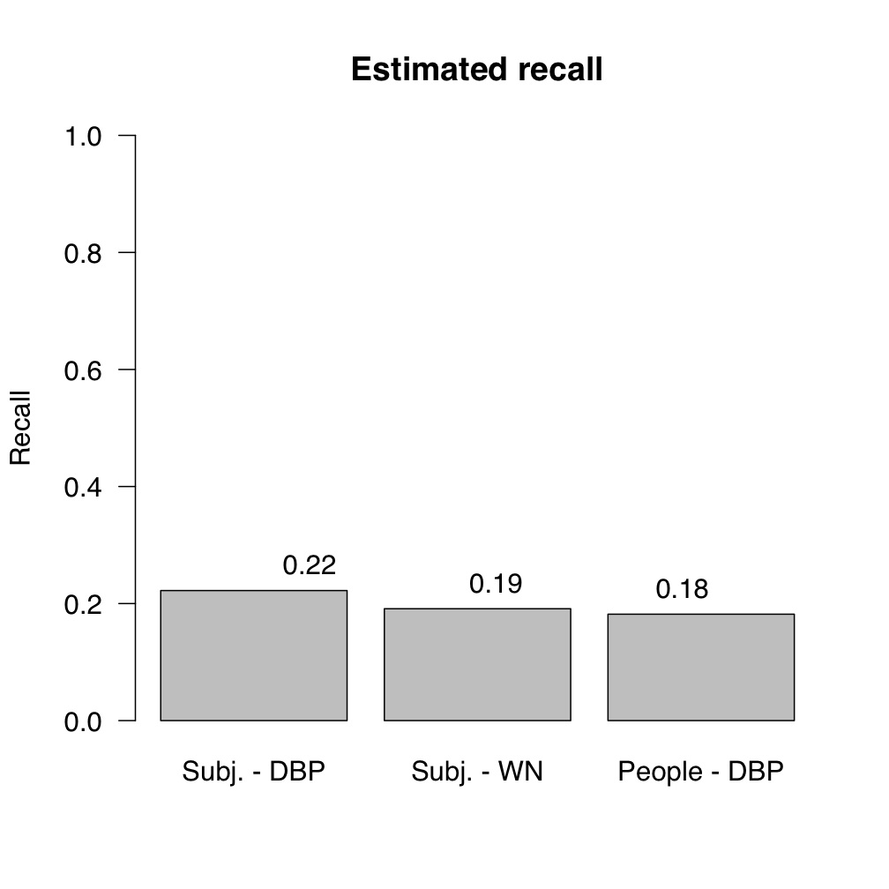
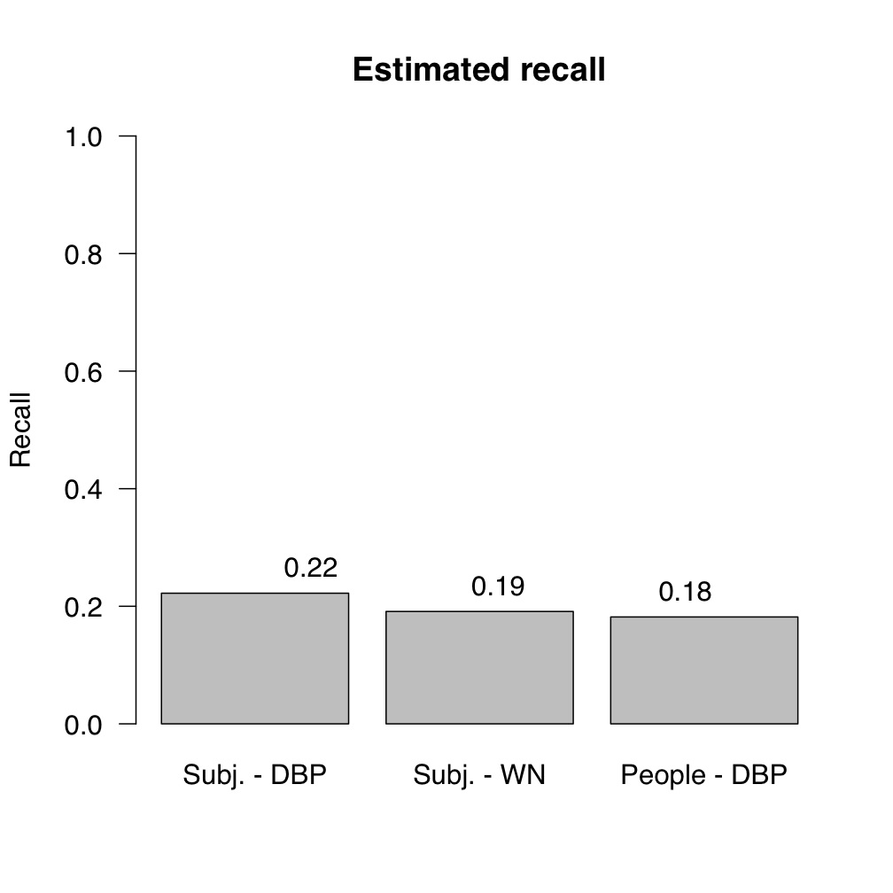

The purpose of this task was to match three resources to each other: the Thesaurus of the Netherlands Institute for Sound and Vision called the GTAA, WordNet and DBPedia. A description of the task can be found here. The presentation about the VLCR task given at the Ontology Matching workshop at ISWC 2008 is available here.
Only one participant, DSSIM, participated in the VLCR task. The evaluation of the results will therefore focus on the differences between the three alignments, and the four facets of the GTAA. The tabel below shows the number of concepts in each resource and the number of mappings returned for each resource pair. The largest number of mappings was found between DBpedia and WordNet (28,974), followed by GTAA-DBPedia (13,156) and finally GTAA-WordNet (2,405). We hypothesize that the low number of the latter pair is due to the multilingual nature. Except for 9 concepts, all GTAA concepts that were mapped to DBPedia were also mapped to WordNet.

We took samples of 100 mappings per GTAA facet for both the GTAA-DBPedia and the GTAA-WordNet alignments. Each mapping is evaluated as either correct, incorrect, broad match, narrow match or related match. The latter three are considered half-correct. The alignment between WordNet and DBPedia is evaluated by inspecting a random sample of 100 mappings.
 The precision of the GTAA-DBPedia alignment is higher than that of the GTAA-WordNet alignment. A possible explanation is the high number of disambiguation errors for WordNet, which is much finer grained than GTAA or DBPedia.
A remarkable difference can be seen in the People facet. It is the worst scoring facet in the GTAA-WordNet alignment (10%), while it is the best facet in GTAA-DBPedia (94%). Inspection of the results revealed what caused the many mistakes for WordNet: almost none of the people in GTAA are present in WordNet. Instead of giving up, the mapping tool continues to look for a mapping and maps tha GTAA person to a lexically similar word in WordNet. This problem is apparently not present in DBPedia. Although we do not yet fully understand why not, an important factor is that more Dutch people are represented in DBPedia.
Apart from the People facet, the differences between the facets are consistent over the GTAA-DBPedia and GTAA-WordNet alignments. Subjects and Locations score high, Names somewhat less.

The alignment between DBPedia and WordNet received a precision score of 45%. DBPedia contains type links (wordnet-type and rdf:type) to WordNet sysnets. There was not overlap between the mapping submitted by DSSIM and these existing links.
We created reference alignments by mapping samples of 100 concepts from the People and Subjects facets to both DBPedia and WordNet. However, none of the People in our sample of 100 GTAA People could be mapped to WordNet. Therefore, recall for this particular alignment could not be detemined.
 

The first figure shows how many of the GTAA Subject and People in our reference alignment was also mapped by DSSIM. We call this coverage. The second figure depicts how many GTAA concept in our reference alignment were mapped by DSSIM to the exact same DBPedia/WordNet concept, which is the conventional definition of recall. All three alignments had a similar recall score of aroud 20%.
Subject:pausbezoeken and List_of_pastoral_visits_of_Pope_John_Paul_II_outside_Italy. Location:Venezuela and synset-Venezuelan-noun-1 Subject:Verdedigingswerken and fortification
Person:GoghVincentvan -> synset-vacationing-noun-1 Location:Harlem -> synset-hammer-noun-8 Location:Melbourne -> synset-Melbourne-noun-1
Another example of resource-specific structure that could aid the mappings are the redirects between pages in Wikipedia or between "things" in DBPedia. DBPedia contains things for which no other information is available than a 'redirect' property pointing to another thing. The wikipedia page for "Gordon Summer" for example, is immediately referred to the page for "Sting, the musician". The titles of these referring pages could well serve as alternative labels, and thus aid the mapping between the gtaa concept person:SummerGordon and the dbepdia thing Sting(musician).
Of course, there is a trade-off between the amount of resource-specific features that are taken into account and the general applicability of the mapping tool. However, some of the features discussed above, such as facet information, are found in a wide range of thesauri and are therefore serious candidates for inclusion in a tool.
Deciding which synset or DBpedia thing is the most suitable match for a GTAA concept is a non-trivial task, even for a human evaluator. Often, multiple mappings are reasonable. Therefore, the recall figures that are based on a hand-made reference alignment give a possibly too negative impression of the quality of the alignment. The evaluation task was further complicated because of the 'related' matches. There is a lack of clear definitions of when two concepts are related.
Another factor that has to be considered when interpretting the precision and recall figures, is the number of Dutch-specific concepts in the GTAA. For example, the concept Name:Diogenes denotes a Dutch TV program instead of the ancient Greek. Although the fact that Diogenes is in the Name facet and not in the People facet provides a clue of its intended meaning, it could be argued that this type of Dutch-specific concepts pose an unfair challenge to the mapping tool.
During the evaluation process, we found cases in which DSSIM mapped to a DBPedia disambiguation page instead of an actual article. We considere this to be incorrect, since it leaves the disambiguation task to the user.
We would like to thank Chris Bizer, Fabian Suchanec and Jens Lehman for their help with the DBPedia dataset. We would also like to thank Willem van Hage for his advise. We gratefully acknowledge the Dutch Institute for Sound and Vision for allowing us to use the GTAA.
Send any questions, comments, or suggestions to:
{kind=link}